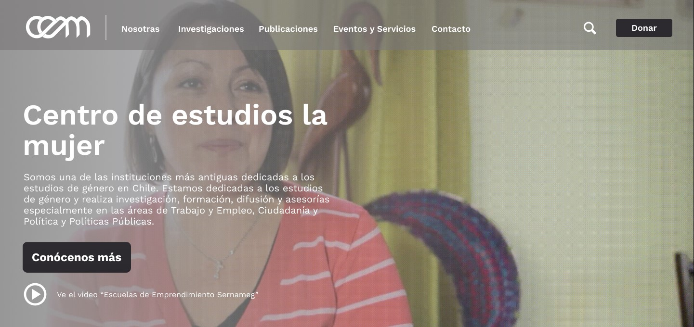

Desafíos
El Centro de Estudios de la Mujer, es una organización con amplia trayectoria, fue
fundada en el año 1984 y se ha encargado de informar a la sociedad acerca de diversos
temas como la desigualdad de genero, violencia sexual, entre otros,
Los
principales desafios fueron en primer lugar cambiar la percepción de las usuarias ya que
actualmeente CEM es visto mas como un movimiento feminista que como un centro de
investigación,
y el segundo era lograr que las nuevas generaciones conozcan la función y aporte de
CEM al género.
Página actual de CEM
Investigación
Entrevista
El proceso de investigación se inicio realizando una entrevista con el cliente, este indico que la página actual lamentablemente no es funcional para los propósitos comunicativos ni difusivos que necesita, fallando también en términos visuales y de identificación al no poseer un manual de marca a pesar de la cantidad de años que el centro lleva activo.
Benchmark
El siguiente paso fue crear un Benchmark, tomando en cuenta la funcionalidad de los sitios web que guardaban relación con CEM. El enfoque principal fue analizar organizaciones con enfoque similares , la cuales fueron divididas en plataformas nacionales e internacionales para así poder analizar sus prácticas, servicios y procesos.
Benchmark completo en el siguiente link
Análisis Heurístico
Se analizo la heuristica de la página arrojando como resultado un 48,38% de usabilidad. En esta métrica se analizaron diez aspectos diferentes, teniendo cada bloque una valoración del 0 al 10 (donde 0 = Muy Mal, 10 = Muy Bien; NA = No aplica para el sitio, S = Se cumple en todo el sitio).
Para detallar el Análisis Heurístico, entrar el siguiente link
Entrevista con Usuarios
Se llevaron a cabo una serie de entrevistas con un grupo de mujeres de distintas profesiones como: Psicólogas, Antropologas y Educadoras, mujeres que representaban el perfil de un ususario CEM. Los resultados de estas entrevistas me permitieron definir ciertos criterios de lo que seria la propuesta visual.
De estas entrevistas destacamos los siguientes puntos:
1. Dificultad para encontrar los contenidos dictados en las misiones.
2. Consideran que la página se ve abandonada y con colores planos.
3. Concuerdan con que falta tocar temas más relevantes dentro de la comunidad feminista.
4. No realizarian una donación.
Visualizar pauta de entrevista aquí
Definición
Card Sorting
Para mejorar la arquitectura de la información de la plataforma, es se decidio realizar el ejercicio de cardsorting el cual consiste en diseñar, organizar, jerarquizar y evaluar un grupo de categorías
La estructura se ve reflejada en el orden de los distintos elementos que componen un sitio web. Cada uno tendrá un lugar claro, según lo que espera encontrar el visitante en el futuro.
Ver Card Sorting aquí
User Persona y Journey Map
Gracias a las entrevistas, y también en contexto de saber quiénes son las usuarias más habituales de CEM, desarrolle dos User Persona, Andrea Herrera, activista de 28 años y Soledad Pinto, investigadora de 50 años. Realice el recorrido de ambas usuarios por el sitio web actual de CEM, para ver el viaje de Soledad puedes acceder al siguiente link, para visualizar el viaje de Andrea accede aquí
Afinity Map
El siguiente paso fue crear un Mapa de Afinidad, donde agrupe en diferentes categorías los distintos aprendizajes obtenidos dde distintas fuentes como: “Benchmark” y “Entrevista con Usuarias” y “Análisis Heurístico”, de este proceso surgieron dos insights los cuales me permitieron plantearme los How might We e iniciar la lluvia de ideas.
Luego de realizar la sintetización de información surgieron los siguientes insights, los cuales corresponden a un pensamiento que implica el descubrimiento de una nueva percepción con respecto a un problema, dando como resultado una nueva comprensión del mismo:
1.- La manera en que el CEM muestra la información sobre los temas relevantes es de difícil acceso para las usuarias.
2.- CEM necesita una identidad visual para que las usuarias entiendan los propósitos y actividades que este realiza y así logren involucrarse en las problemáticas de la mujer.
Para ver todo el detalle ingresar aquiDiseño
Wireframe
Después del ejercicio de cardsorting es se rearmo el menú de la página, se ditribuyo de mejor manera sus contenidos y la información correspondiente a cada interfaz, para poder hacer un testeo de los contenidos, su distribución y jerarquía.
El proceso de prototipado se inicio a través de su diseño de mediana fidelidad, que corresponden al Wireframe el que esquematiza el diseño de página u ordenamiento del contenido del sitio web, incluyendo elementos de la interfaz y sistemas de navegación, y cómo funcionan en conjunto. Su principal objetivo reside en la funcionalidad, comportamiento y jerarquía de contenidos.
Para acceder a este prototipo de media definición, haz click aquí
Testeos
Se realizo un testeo del wireframe, de las secciones de Investigacion, contacto y el home, para esto testeamos 6 usuarias todas mujeres, ligadas al area de investigacion y ciencias sociales, las cuales fueron los contactos proporcionados por CEM, de esas entrevistas se generaron los siguientes feedback:
1. Mediante el diseño entiende en qué consiste CEM, qué se hace y quiénes o para quiénes está hecho este sitio.
2. Le gusta la presencia de imágenes en contextos más cotidianos, mujeres racializadas, mujeres de pueblos originarios.
3. Le gustaría que si ya se encuentra en la investigación le den la opción de volver atrás rápidamente (Le gustaría tenerlo más a la mano).
4. Se debe tener cuidado con las palabras que subrayamos porque se entienden como links.
5. Reiteración de ciertos términos.
6. Le gusta la prioridad que se le da a las investigaciones.
Prototipo Alta Fidelidad
El prototipo consiste en la creación de una representación en alta fidelidad del sitio web que se desarrollará, tanto visualmente, como en el ámbito de experiencia, ya que cuenta con el contenido detallado, la distribución asignada y con las interacciones que tendrá el sitio, permitiéndole navegar de manera realista.